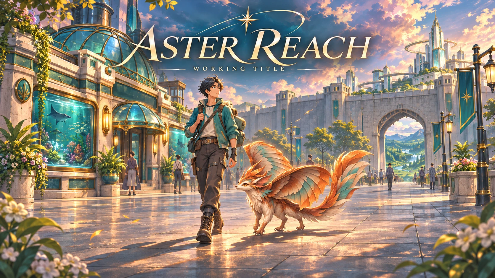

IN DEVELOPMENT — WORKING TITLE
Aster Reach
A modern-fantasy beast-tamer JRPG in development for Android. Explore a fortified city and nearby wilderness, form beast contracts, and take part in turn-based battles.

FROM THE PROTOTYPE
Inside the game.


Swipe or use the arrows · tap an image to enlarge
Explore the Tideglass Aquatics frontage with a summoned companion. Prototype gameplay, Build59/v5.9; Windows capture. Contains AI-generated work-in-progress artwork. Brice Creative Studios.
Genuine Windows captures of Build 59 / v5.9 using a demonstration profile. Prototype and AI-generated artwork remain work in progress. Creature designs are provisional; final owner approval is pending. Brice Creative Studios.
The current prototype
The current prototype includes companion summoning, academy training and persistent beast progression. Artwork and presentation remain works in progress.